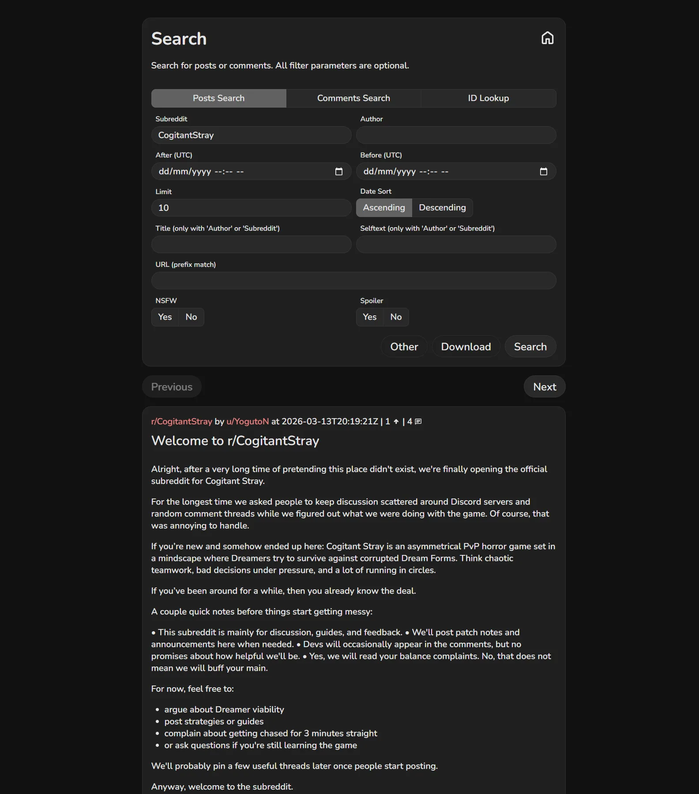
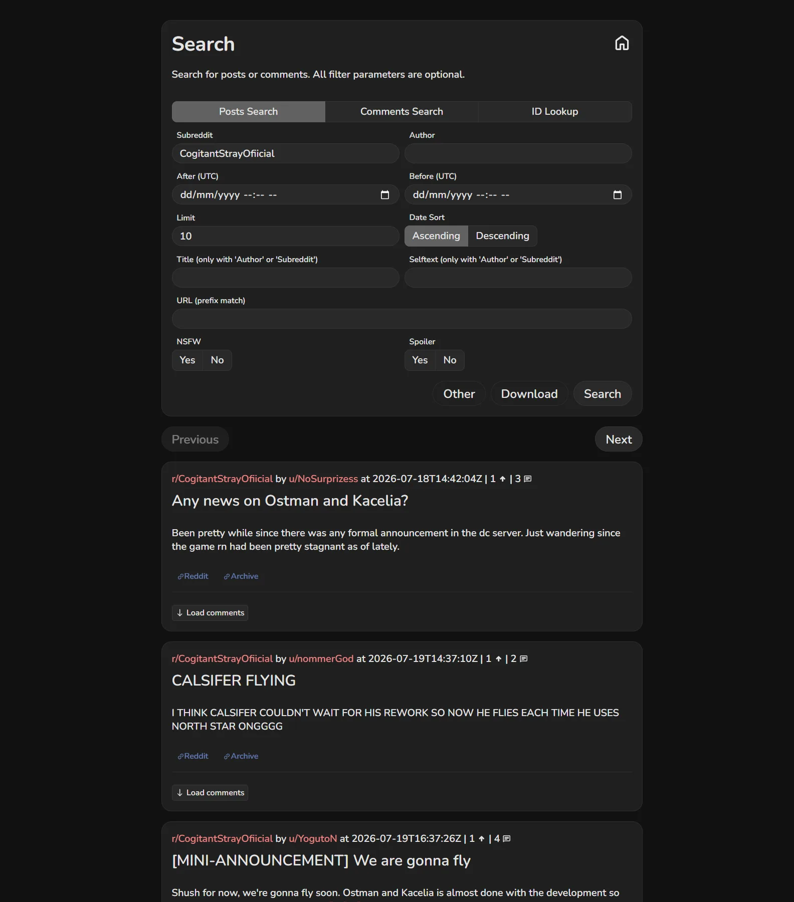
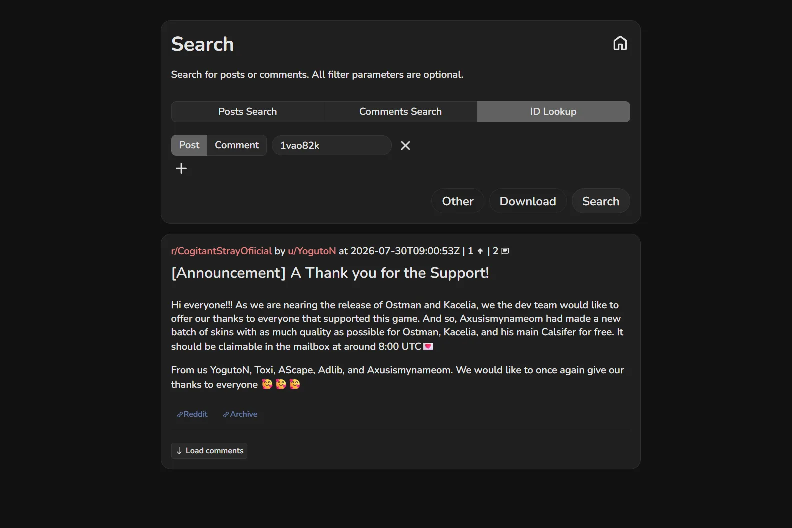
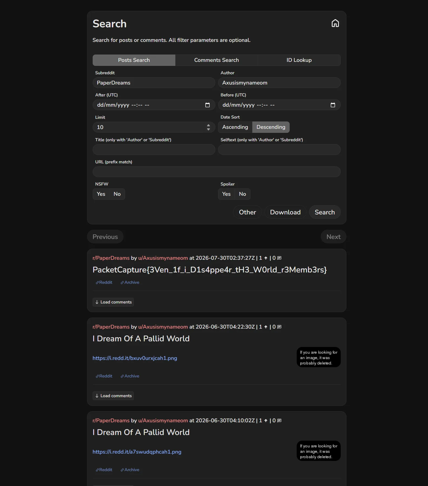

01Start point: the subreddit r/CogitantStray.
- What I found: the subreddit is banned, so Reddit shows nothing.
- Thinking: a ban hides content from the live site but doesn't erase it. Third-party archives such as Arctic Shift keep a copy of every post and comment as it was made, so the "deleted" community is still readable there.
02Pivot: the archive of r/CogitantStray.
- What I did: pulled all of its posts and comments from Arctic Shift and searched them for "PacketCapture{".
- Result: no flag inside the banned subreddit itself, but a full list of who was active (YogutoN, the game's dev, opened the sub on 2026-03-13).
- Thinking: the content wasn't there, but the archive gives me the people. When a community is banned, its members usually regroup somewhere else, so the people are the trail, not the subreddit.

03Pivot: the authors, and where they moved.
- What I did: listed every author from the archive and looked up which other subreddits each of them posts in.
- Result: the same names (YogutoN, nommerGod, pin-needles, Wasaboomm19...) reappear in r/CogitantStrayOfiicial, a misspelled "official" migration sub. A dev announcement there by YogutoN credits "Axusismynameom" as part of the dev team.
- Thinking: overlap between several members is the signal that this is the new home. The announcement turns one username into a named insider, which makes that account worth following on its own.


04Pivot: u/Axusismynameom's other posts.
- What I did: searched the archive for that author's posts and grepped for "PacketCapture{".
- Result: in r/PaperDreams, a post titled with the flag (2026-07-30), next to two "I Dream Of A Pallid World" posts.
- Thinking: the flag text itself ("even if I disappear, the world remembers") confirms the intended lesson.
